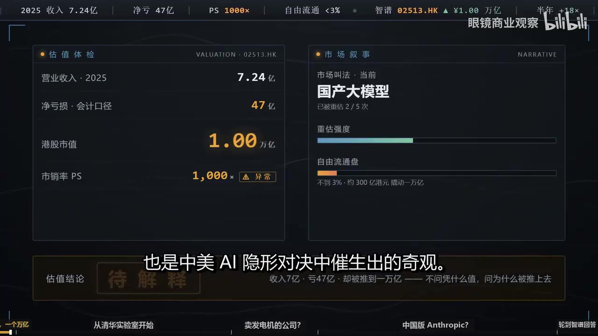
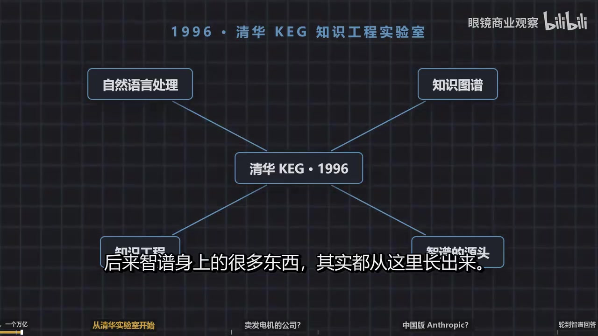
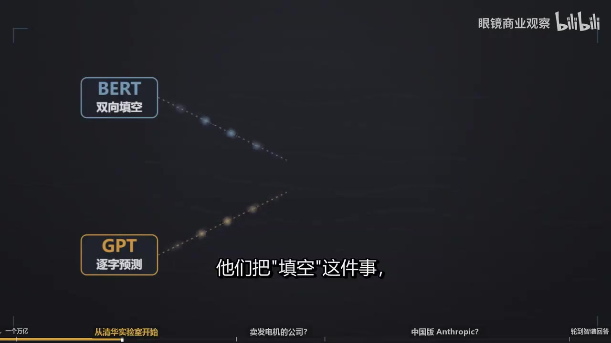
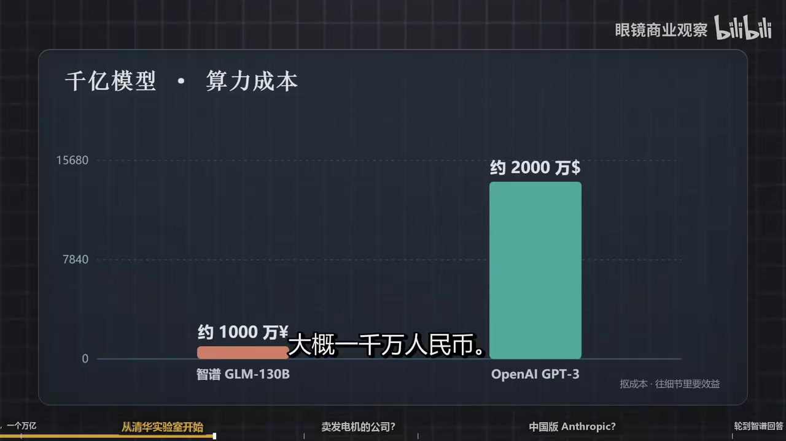
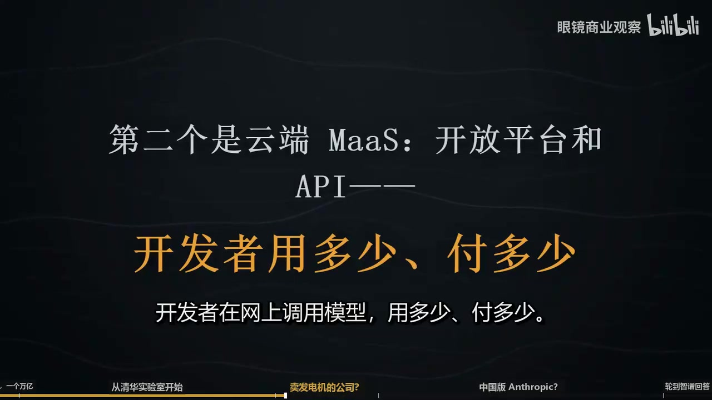
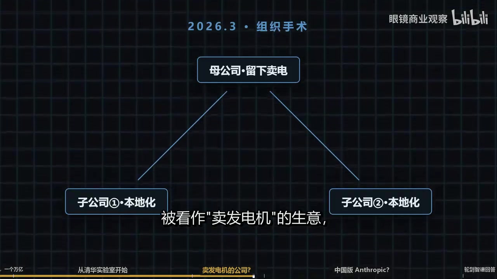
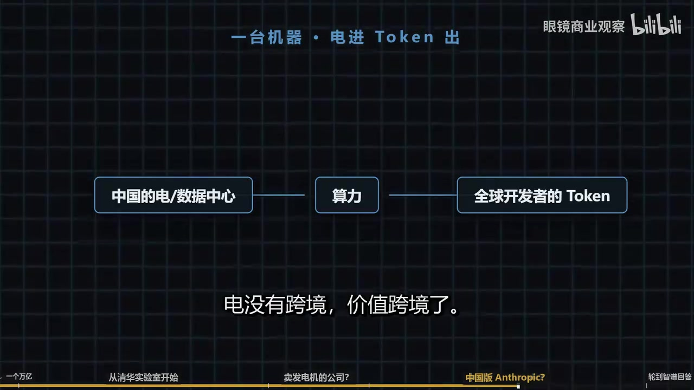
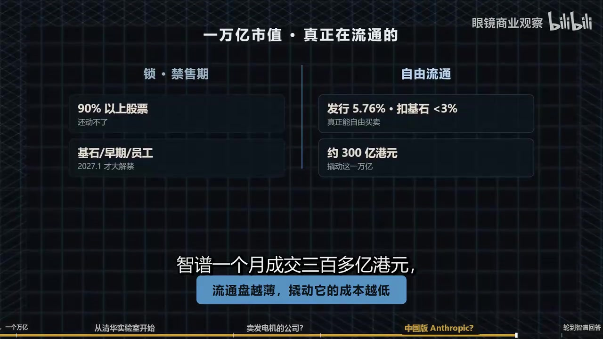
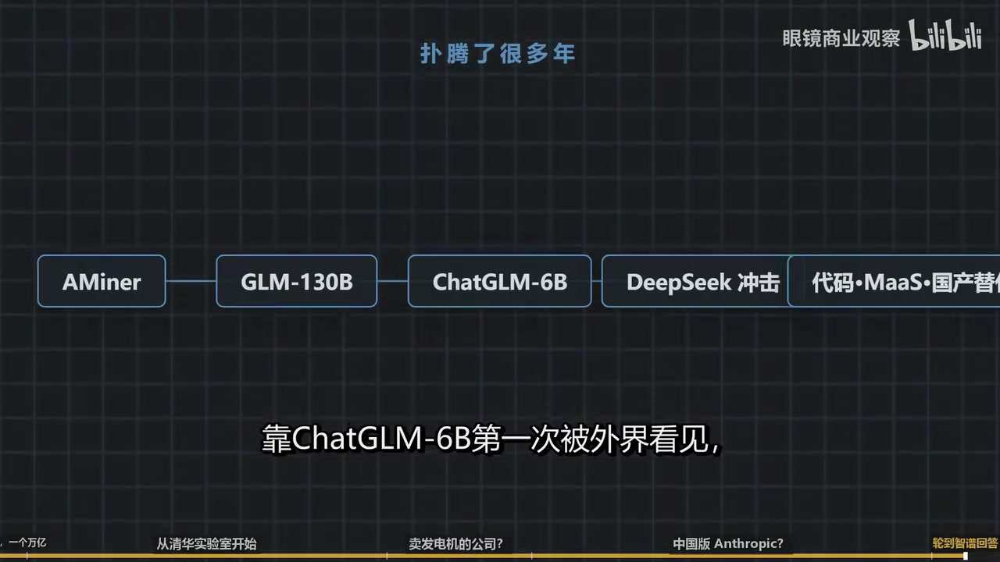

01万亿与七亿：视频真正要解释的反差
视频的核心不是判断“智谱到底值不值一万亿”，而是解释：当技术追赶、国产替代、Token 出海、纯 AI 标的稀缺和极薄流通盘同时出现时，市场为何愿意暂时用一万亿港元给未来标价。

因此，视频把公司价值拆成了三个不同的问题：它过去积累了什么；它今天靠什么赚钱；市场又在为哪一种尚未兑现的未来付费。只有把这三层分开，才能避免把“公司是否有能力”与“股价是否合理”混为一谈。
本页忠实整理原视频观点。涉及 2026 年股价、融资、收入、市场排名、制裁与模型对比的数据均未在本页独立核验，不构成投资建议。
02从实验室长出的公司：技术与工程化的长坡
智谱的起点不是 2019 年注册公司，而是 1996 年成立的清华 KEG 知识工程实验室；“论文变产品”的工程传统，是视频解释其技术路线和企业业务的第一条因果链。

GLM：把两种语言建模思路接到一起
00:05:08视频用通俗比喻区分 BERT 和 GPT：前者做“双向填空”，后者做“逐字预测”。GLM 的思路，是把填空任务转换成自回归预测，从而在同一框架中融合两类能力。视频还声称，这种设计带来更稳定的训练和更易压缩的参数分布。

真正的护城河不只是一篇论文
论文与原型
可运行系统
成本与稳定性
开发者认知
客户与现金流
视频认为，智谱的差异化来自一条连续能力链：AMiner 时代就开始的技术预测业务提供早期现金流；“paper to product”形成工程文化；GLM-130B 证明团队能完成高风险大模型训练；ChatGLM-6B 则用开源换取开发者认知。它不是单点模型能力，而是研究、工程、传播和企业交付的组合。

03“卖发电机”还是“卖电”：商业模式的结构性难题
视频把智谱的两类收入做成一个极易理解的比喻：私有化部署像卖发电机，客单价高但依赖项目交付；MaaS/API 像卖电，单价低却更容易规模化。资本市场真正想看到的是后者占比持续上升。
| 维度 | 本地化部署 | 云端 MaaS / API |
|---|---|---|
| 视频比喻 | 卖发电机 | 卖电 |
| 收入方式 | 私有化部署、定制开发、项目交付 | 开发者按调用量付费 |
| 2025 年占比 | 73.7%，约 5.34 亿元 | 26.3%，约 1.90 亿元 |
| 优势 | 高客单价、已有企业客户与交付经验 | 边际成本下降、可全球扩张、可进入工作流 |
| 约束 | 依赖人力，收入波动，容易被质疑为“高级外包” | 竞争激烈，开发者忠诚度低，必须同时做到强、便宜、稳定 |

为什么不把重心放在消费级 App
00:12:21视频转述张鹏的判断：中国个人和企业的软件订阅意愿弱于美国；消费端入口又掌握在大厂平台手中。智谱清言的月活无法与豆包、千问、DeepSeek 等竞争，因此公司把重心收回企业客户、API 和代码工作流。
这条路线并不自动更优。B 端交付能够带来确定性收入，但也可能锁死在人力密集型项目里；API 更像基础设施，却必须先有足够强的模型、稳定服务和开发者生态。视频呈现的转型本质上是：用已有交付业务托底，同时试图把增长引擎切换到可重复销售的模型服务。
组织调整是在向资本市场“改写报表形态”

云端平台年化收入被描述为快速增长，代码模型订阅供不应求；如果这些增长能持续，收入结构才可能真正从项目型交付转向平台型复利。
04五股力量如何叠出“万亿”价格
视频认为，一万亿港元不是单一估值模型算出来的，而是五股力量的合成结果：海外估值锚、国产替代、Token 出海、纯 AI 标的稀缺，以及极薄流通盘。
“Token 出海”为什么有感染力
00:18:54硬件出海依赖产品、品牌、渠道和本地运营；模型服务则可以先进入开发者的 API、代码编辑器和 Agent 工作流。视频把它进一步抽象成一条价值跨境链：国内的电与数据中心留在本地，海外用户购买的是由算力转换出的智能服务。

交易结构让叙事变成价格
00:23:00宏大故事最终要通过买卖转成股价。视频称智谱发行约 5.76% 股本，扣除锁定的基石投资者后，真正自由买卖的股份不足 3%。当港股通、指数资金、纯 AI 标的稀缺和抢筹情绪同时出现时，有限筹码会放大上涨；解禁或情绪退潮时，也可能以同样机制放大下跌。

模型进步、国产适配、开源、订单与指数纳入在上涨期都可能被解释为利好；一旦流通盘扩大、增长不及预期或更强替代品出现，同一组变量也会迅速失去溢价。
05真正需要回答的问题：谁能穿越叙事周期
一万亿不是答案，而是一道提前发下来的考题。资本市场已经把“世界级 AI 底座”的预期喊了出来，接下来必须由模型、开发者、客户、调用量和账单逐项回答。

后续观察清单
泡沫与基础设施并不互斥
00:25:40视频用互联网泡沫作类比：价格可能包含泡沫，但泡沫也会聚集资金、人才和基础设施，帮助少数公司把真正重要的技术建出来。关键不是“有没有泡沫”，而是泡沫褪去后，谁还能靠产品和客户留下。
智谱的优势，在于它已经“扑腾了很多年”：有实验室积累、模型训练经验、开源声量和企业客户。它的风险，也恰恰来自市场把这些积累一次性折算成了极高的未来预期。技术史能解释为什么它有资格站上牌桌，却不能单独证明当前价格；商业模式的转换速度，才是两者之间的桥。
本报告基于原视频转写和画面整理，对明显的语音识别错误（如“质朴/质谱”统一为“智谱”、“GM”统一为“GLM”）做了语境校正。动态财务、股价、制裁、产品性能和市场排名均按视频表述保留，未作为独立事实确认。